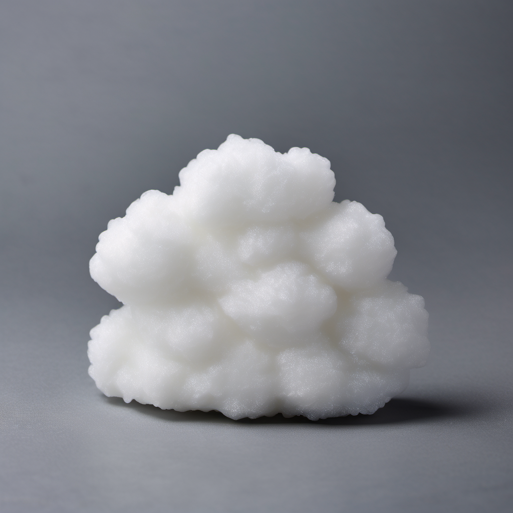

Brisa Divina
Uma sobremesa que vai te deixar nas nuvens - literalmente! Prepare-se para uma explosão de sabor celestial com a Brisa Divina. Delicie-se com a suavidade das nuvens e a doçura divina, e quem sabe você não descobre o verdadeiro segredo da felicidade? Shhh, é o nosso segredinho!... é pó. É cocaína. 😑
Uma sobremesa cuja base tradicional é a clara de ovo, batida com açúcar para criar uma textura leve e aerada. No entanto, o que realmente a distingue é a adição de cocaína em pequenas quantidades, que eleva a experiência gastronômica às alturas. Para complementar essa mistura, são usados cristais de açúcar, que adicionam um toque crocante e intensificam a doçura. O aroma de baunilha é então incorporado para equilibrar os sabores, suavizando a presença do pó branco. Por fim, ela recebe uma polvilhada de pó de pérola, conferindo um brilho iridescente à sobremesa.